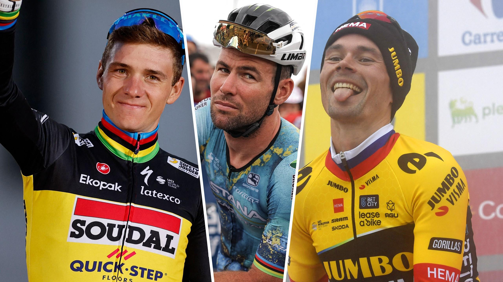
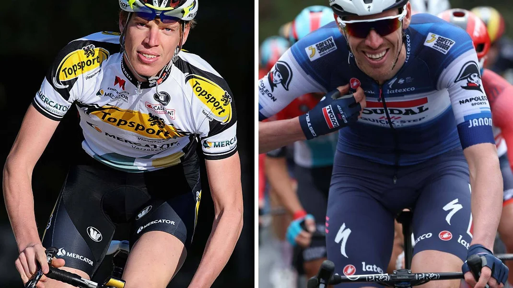
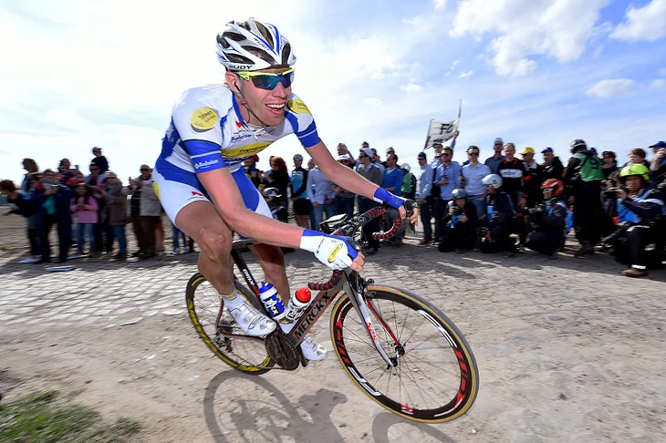
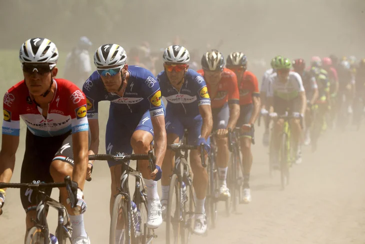
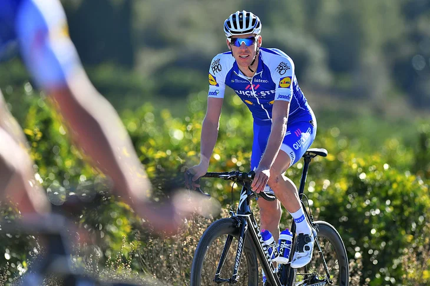

UCI E-BIKE WORLD CUP REVIEW - UNPREDICTABLE RACES AND UNEXPECTED HEROES
As the dust settles on the 2023 UCI E-Bike Cross Country World Cup, it is evident that this season has been a remarkable journey of thrilling races, technological innovation and the emergence of new stars.
Riders from all corners of the globe have battled it out on challenging courses across Europe, pushing
the limits of
both themselves and their equipment, showcasing the sport's immense potential and leaving a lasting
legacy of
excitement and passion.
The final round of the 2023 UCI E-Mountain Bike Cross-country World Cup
took place at
the Castelldefels course in Barcelona and provided a fitting end to a season characterized by its
unpredictability,
with races often decided by mere seconds, or photo finish.
Under the scorching sun and a dust-laden atmosphere, competitors fiercely battled it out in the
seven-lap, 3.4km
course, covering a total distance of 27.2km with a challenging ascent of 952m.
Seasoned French rider Jérôme Gilloux showcased his veteran skills, adding another triumph to his
illustrious career.
Meanwhile, Austria's Anna Spielmann clinched her maiden UCI World Cup victory, displaying prowess on the
challenging
Catalonian circuit. The showdown unfolded against a backdrop of intense racing, setting the stage for
Spielmann's
breakthrough performance and Gilloux's masterful demonstration of experience and talent.
Preceding the Barcelona event, the overall classification had already seen confirmation in Girona,
Spain. Justine
Tonso and Jérôme Gilloux, teammates at Lapierre Overvolt, asserted their dominance with consistent form
throughout
the season. This dynamic French duo secured victories in both individual and team classifications, a
remarkable
achievement even for Gilloux as he clinched another consecutive title.
JONAS VINGEGAARD AND TADEJ POGACAR FAVOURITES BUT REMCO EVENEPOEL 'CAN WIN' TOUR DE FRANCE, SAYS CHRISTIAN PRUDHOMME
Will Remco Evenepoel (Soudal Quick-Step) challenge Tadej Pogacar (UAE Team Emirates) and Jonas Vingegaard (Visma-Lease a Bike) at the 2024 Tour de France? Evenepoel is set to make his debut at the Grand Tour and race director Christian Prudhomme is excited by the "X-factor" he will bring. Prudhomme was impressed with the way Evenepoel bounced back at the 2023 Vuelta a Espana.

Remco Evenepoel could “turn things upside down” on his debut at the Tour de France in 2024, believes
race director
Christian Prudhomme.
The Soudal Quick-Step rider looks set to appear at the Grand Tour for the first time next
season.
If he does he will be stepping into the domain of Tadej Pogacar (UAE Team Emirates) and Jonas Vingegaard
(Visma-Lease a Bike), who have both won the Tour twice over the last four years.
But Prudhomme expects Evenepoel to "leave his mark" when he goes up against the vaunted duo, who have
sparred so
memorably at the Tour over the past three editions.
"Obviously Vingegaard and Pogačar will be the big favourites,” said Prudhomme, according to Sporza.
“But Evenepoel does have that X-factor, that unexpected and brilliant thing. He can suddenly turn things
upside
down.
"He can win. But what is certain is that he will leave his mark on the race and, therefore, also on the
overall
victory.”
Evenepoel won the Vuelta a Espana in 2022 along with the road race at the World Championships.
He withdrew from this year’s Giro d’Italia due to Covid-19 when leading the race, and then was in the
mix at the
Vuelta before an off day saw him slip back in the standings.
Prudhomme was impressed with how Evenepoel responded at the Vuelta after having a day when his "tank was
empty".
“It struck me how he was able to bounce back after a setback,” he said.
“I thought he would give up, but we saw the opposite. He made a spectacle of it with his attacks."
The 2024 Tour de France will finish outside of Paris for the first time due to the staging of the
Olympic Games.
The climactic Stage 21 will be a 34km individual time trial from Monaco to Nice on the south
coast.
Origin Stories: How Tim Declercq Became ‘The Tractor’ – ‘I Can Work at the Front All Day’
First bike, first win, first contract: The Belgian super-domestique is renowned as one of the biggest and most consistent motors in the bunch: 'I'm no Ferrari, but I can always keep going.'
 CALPE, Spain (Velo) — Tim Declercq probably see more TV time than most, especially for a rider who’s
never won a pro race.
Almost always, the self-styled “Tractor” is pulling at the front.For 2024, Declercq makes a high-profile
move to Lidl-Trek to slot into the team’s ambitious plans for the classics and grand tours. Nothing much
will change for Declercq except the jersey he’s wearing.
“If you would have asked me 12 months ago, I would have never thought I would change. A lot can happen
in one year,” Declercq told Velo. “I was so happy to have the opportunity to join a new and ambitious
team like Lidl-Trek, and some great leaders I will work for.
“My role won’t change. To pull for a long time, or to bring them into position, or to ride to drop the
sprinters, or to help in the final,” he said. “For sure it’s going to be help other guys, that is what I
do.”
Today, the 34-year-old is one of the peloton’s leading super-domestiques, and he’s made a career out of
helping others win. Whether it’s pulling for Tom Boonen in the classics, or pulling for Sam Bennett or
Mark Cavendish in the sprints, Declercq and his broad shoulders was usually setting the pace.
His famous nickname — “The Tractor” — came early, and he loves it
“It was with my first race with Quick-Step in the Vuelta a San Juan, and one of the race announcers
started calling me ‘El Tractor,’ because I was always working at the front,” Declercq said. “It’s quite
a good one. I like this job. I am not a Ferrari, but I can work at the front for a long time without
losing my power. Kind of like a tractor, I suppose.”
The economic crisis has translated into tangible social impacts, with a substantial portion of the
population experiencing financial hardship, thus flaring social tensions. Indeed, a growing anger has
arisen over the rising costs of basic necessities; staples such as bread, one of the slogans of the 2011
uprising (“bread, freedom, dignity”) have seen their price triple, and the price of key food imports
like cooking oil and vegetables have also shot up, putting the squeeze of many Egyptian’s
wallets.
First bike: ‘Finding one that fits’

Growing up in Leuven, Belgium, like many young boys, he gravitated to soccer, but also started to ride
bikes thanks to his father’s passion for racing. “I was riding on my father’s bike when I was six. I
would play out the races we would watch on TV. He was a big fan of Johan Museeuw and we watched the
races together on TV. I waited until I was 12 when I got my first racing bike. It was a second-hand
bike, a Ridley Speedster.
“The year after we bought a second-hand bike from the Lotto team, a GT bike, with the down-tube going
down at an angle like today. They must have been ahead of their time.”
Today, Declercq is a strapping 6-foot-2, relatively tall for a professional cyclist. Like most teens, he
grew in spurts, often out-growing the bikes his parents would buy for him.
“In my third year, my bike was way too small. I was still growing, and it’s not an easy sport for the
family, and my brother was also racing. It can be expensive, going to all the races, buying all the
equipment, and paying the fees,” he said. “Today I am racing on a 60cm frame, an 85 seat tube, and I
have to use a negative stem to try to be as aero as possible.”
First win: ‘Explosivity was never my cup of tea’

Declercq is one of those rare pros who’s never won a professional race.
He’s been plenty close, and his palmarès are chock full of podiums, including second at
the 2020 Driedaagse Brugge-De Panne, when he sacrificed, of course, for teammate Yves Lampaert to take
the victory.
The seeds of the “Tractor” were planted early.
“My first racing experience was not a big success. We started racing on the track and it was a 500m time
trial, and I was second to last, and my friend was last,” he said. “Later in the scratch race, I was
last, and he was third last. I didn’t think it was going to be much there for me.
“In my first road race, I was already third. Then we could see I was made more for endurance than for
sprinting. Explosivity was never my cup of tea.” But nearly every major pro won a lot in their junior
racing days. That’s how young riders got noticed. No one was looking for a super-domestique among the
U23 ranks. Team managers want winners.
Even if he remains winless as a pro, Declercq wracked up some victories that proved key for him to make
the leap to the pro ranks.
“The first race I won the year after when I was 13 or 14, and then I won 13 or so during the entire
season,” he said. “There were only 20 races, and they were all kermesses, so I won more than half of
them. That wasn’t so bad. All laps of 1.5km or 2km, it was very nice for the parents to go and watch.
The first big race I won was the U23 Belgian championship.”
First contract: ‘I never thought I would make it as a pro’

By his early 20s, Declercq was splitting his time between university studies and racing, and knew if he
wanted to have a shot at making it as a pro in Belgium’s cut-throat racing scene, he’d have to buckle
down.
He took one year off his studies and decided to get more serious about his training and preparation. It
all came down to a breakthrough victory as the U23 Belgian title in 2011, when he won ahead of other
future pros in a stacked 110-rider field that included future teammate Lampaert, Tim Wellens, Tim
Merlier, Edward Theuns, Tom Van Asbroeck, and Tosh Van der Sande, among others.
“I would never thought I would make it to the pros,” he said. “I was still studying, and I gave myself
one year that I was going to try to make it. I was not completely living for my sport, and I was
thinking about doing something with my studies. I was 7th in Paris-Roubaix without doing too much in my
third year in U23. I won the U23 title, and with that I could go to the pros.
“When you become Belgian champion U23 the phone starts to ring,” he said. “I got a phone call from
Walter Planckaert, and I was very happy with that chance. He called me, and he said I could come
tomorrow to sign the contract. If you still want to become pro, because he knew I was still studying, he
said you have to come tomorrow to sign the contact.
“I could only go the week after because I had to go to the Tour de l’Avenir,” he said. “They waited for
me.”
He joined Topsport Vlaanderen-Mercator in 2012, and raced five seasons with the second-tier Belgian
squad. Patrick Lefevere noticed that despite not winning that Declercq packed a tremendous motor, and
gave him a shot at the WorldTour in 2017 with Quick-Step.
He’s been pulling at the front ever since.